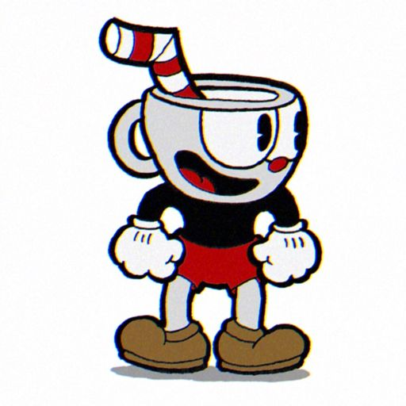
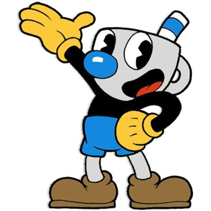
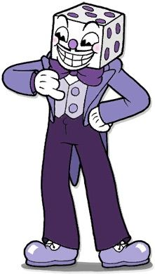
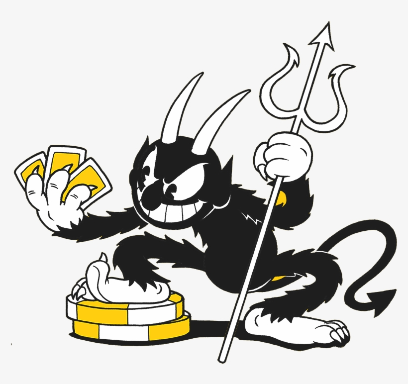

Cuphead is the titular main protagonist of Cuphead. He is Mugman's irresponsible older twin brother and, like the rest of his family, lives on Inkwell Isle. He is usually played by the first player and, as a result, was the default character for Player One before the update in April 2019, after which the first player can choose whether to play as him or Mugman.

Mugman is the deuteragonist of Cuphead. He is Cuphead's sensible younger twin brother and, like the rest of his family, lives on Inkwell Isle. He is controlled by the second player and can join or leave the game at any time. Due to his deuteragonistic role, Mugman formerly could not be controlled by the first player. However, as of the update in April 2019, the first player can choose to play as Mugman instead of Cuphead, making it so that Mugman won't have to be controlled by the second player.

King Dice is the right-hand man of the Devil and the secondary antagonist of Cuphead, making his very first appearance in the game in the opening cutscene. He can be found within every Die House, where he acts as a gatekeeper, blocking passage between isles until a required list of soul contracts are turned in to him by either Cuphead or Mugman.

The Devil is the main antagonist and the final boss of Cuphead. As ruler of the underground isle of Inkwell Hell, he resides within the colossal, castle-like casino that takes up most of the isle's landscape.